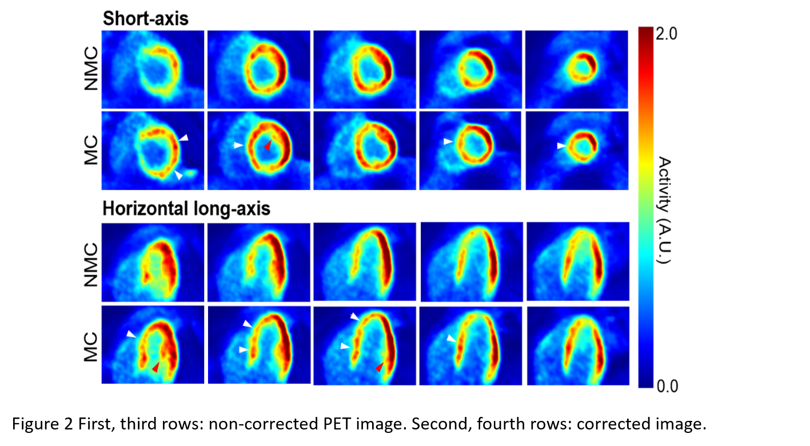

|
Selected Research Topics
Bayesian Inference for dynamic imaging
Perfusion CT imaging is commonly used for the rapid assessment of patients presenting with symptoms of acute stroke.
Maps of perfusion parameters such as cerebral blood volume (CBV), cerebral blood flow (CBF), and mean transit time (MTT)
derived from the scan data provide crucial information for stroke diagnosis and treatment decisions. Most vendors implement
singular value decomposition (SVD)-based methods on their scanners to calculate these parameters. However, SVD-based method
is known to have issues of improperly handling the imperfect scan. For example, increasing the acquisition interval or decreasing
the scan duration may introduce a bias in the estimated perfusion parameters. In this work, we propose a Bayesian inference algorithm,
which can tolerate the imperfect scan conditions better than conventional method and is able to derive the uncertainty of a given
perfusion parameter. We apply the variational technique to the inference problem, which becomes an expectation-maximization problem.
The probability distribution (with Gaussian mean and variance) of each estimated parameter can be obtained.The proposed method can obtain much less bias in estimation than the
conventional method, and additionally providing the degree of the uncertainty in measurement.(link to pubmed)
Motion correction for Cardiac PET
Motion of the myocardium deteriorates the quality and quantitative accuracy of cardiac PET images.
We propose and evaluate a novel method to detect, estimate, and correct body motion in cardiac PET.
Our method consists of three key components: motion detection, motion estimation, and motion-compensated
image reconstruction.Visually, the motion-corrected (MC) PET images obtained by the proposed method have
better quality and fewer motion artifacts than the images reconstructed without motion correction (NMC).
Quantitative analysis indicates that MC yields higher myocardium to blood pool concentration ratios. MC
also yields sharper myocardium than NMC.(link to pubmed)

We present a method for MR-based cardiac and respiratory motion correction of cardiac PET data and
evaluate its impact on estimation of activity and kinetic parameters in human subjects. The results
shows that MR-based motion correction of cardiac PET results in improved image quality that can
benefit both static and dynamic studies.(link to pubmed)

Motion correction for head CT
Although current computed tomography (CT) systems can scan the head in a very short time, patient motion sometimes
still induces artifacts. If motion occurs, one has to repeat the scan; to avoid motion, sedation or anesthesia is
sometimes applied. The authors propose a method to iteratively estimate and compensate this motion during the reconstruction.
In the patient studies, most of the motion blurring in the reconstructed images disappeared after the compensation.
Since only measured raw data are needed for the motion estimation and compensation, the proposed method can be applied
retrospectively to clinical helical CT scans affected by motion. Recently this method has been extened to be applied to dental and maxillofacial
CBCT scan as well, which demonstrated promising results.
(link to pubmed)
(link to pubmed)
 
Attenuation correction for PET/CT
The temporal mismatch between PET and standard helical CT (HCT) causes substantial respiratory artifacts in PET reconstructed
images when using HCT as the attenuation map. We developed an interpolated average CT (IACT) method for attenuation correction
(AC) and demonstrated its merits in simulations. In this study we aim to apply IACT in patients with thoracic lesions using an
active breathing controller (ABC). IACT-ABC reduces respiratory artifacts, PET/CT misregistration and enhances lesion quantitation.
This technique is a robust and low dose AC protocol for clinical oncology application especially in the thoracic region.
(link to pubmed)

Dynamic PET imaging techniques
The overall goal of this project is by developing a series of novel imaging
techniques, making the breakthrough of dynamic PET imaging, thus of the quantitative
imaging. We plan to realize this by: (1) propose and optimize novel scan protocols; (2)
develop methods for image quality improvement and computational models for parametric
analysis; (3) investigate several clinical applications for which dynamic PET imaging
can offer significant values. This project will eventually boost the application of
dynamic PET imaging in clinics.
Research interests
Tomographic image quality control and enhancement
PET/CT and PET/MR image quantification
Radiotracer pharmacokinetics/pharmacodynamic modelling
Novel CT imaging technique
|